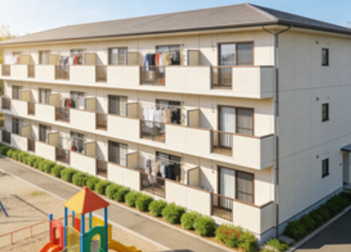

南区（Minami-ku）賃貸情報
南区は京都駅の南側に位置する行政区で、住宅地と商業施設が混在するエリア。京都駅から徒歩圏内には大型ショッピングモールやスーパーがあり、生活利便性が高い。
九条駅周辺は住宅開発が進み、ファミリー向けのマンションが多く建つ。また東寺（教王護国寺）が区内にあり、歴史的景観も楽しめる。交通は京都駅から全国各地へのアクセスが良好で、通勤通学に便利な立地から多くの人々が居住している。
南区の特徴
- 特徴：京都駅南側の住宅・商業混在エリア
- メリット：交通利便性が高い・生活施設が充実
- デメリット：賃料や生活費が高め
- 賃料例：1R約63,000円〜、1K約75,000円〜、2LDK約115,000円〜
推奨物件タイプ

京都駅徒歩10分 1R：約65,000円。高層マンションの物件で、エレベーター・駐車場が完備。24時間管理体制がある。
九条駅徒歩5分 1DK：約78,000円。築3年のマンションで、南向きの部屋で採光が良い。近隣に公園があり子育てに適している。
東寺近隣 2LDK：約120,000円。低層マンションの物件で、庭付きで緑が多い。歴史的景観が近くにあり文化的な雰囲気がある。